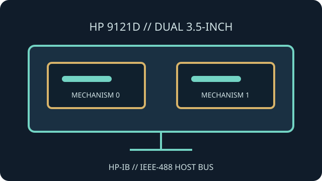

[ INDIVIDUAL COMPONENT // FLOPPY DRIVES ]
Hewlett-Packard 9121D Disk Drive
The HP 9121D is an external dual 3.5-inch floppy disk unit for HP systems. It uses HP-IB (IEEE-488) for host communications and has model-specific disk formats and operating requirements.

IDENTIFICATION NOTE: Identify the exact 9121D variant and host system; nearby HP drive models may use different recording formats, media support or interface behavior.
Model specifications
| Catalog subcategory | External floppy mechanisms |
|---|---|
| Exact model | Hewlett-Packard 9121D |
| Drive arrangement | Dual 3.5-inch flexible-disk mechanisms in one external enclosure. |
| Host interface | HP-IB (IEEE-488 / GPIB) with HP-IB address and bus configuration set for the host. |
| Formats | HP-compatible disk formats and geometry; capacity and exchangeability depend on the host family and software. |
| Host compatibility | For systems with suitable HP-IB hardware and software support for the 9121D. An IEEE-488 electrical connection alone does not ensure PC-format or filesystem compatibility. |
Model-specific compatibility checks
- Check the product label, HP-IB address, cable termination and system software before attempting access.
- Determine which mechanism and disk surface the host selects; the dual-drive enclosure is not equivalent to a single PC 3.5-inch drive.
- Consult the 9121D operator and service documentation for supported media and host families.
Preservation and service notes
Record the host, device address, media type and drive position with each transfer. Use the HP procedure for cleaning and diagnostics, and avoid applying PC drive alignment tools without the correct fixtures.
Preserve the original HP disk structures and logs before converting or extracting files for another platform.
Manufacturer documentation & sources
- HP 9121D Operator's Manual — Internet Archive / BitsaversArchived HP operator manual for the 9121D, including operation and configuration details.
- HP 9121D/S Disc Memory Operator's ManualManual scan covering the 9121 family and its system use.
Consult the relevant system manual as well as the drive manual when selecting a host configuration.